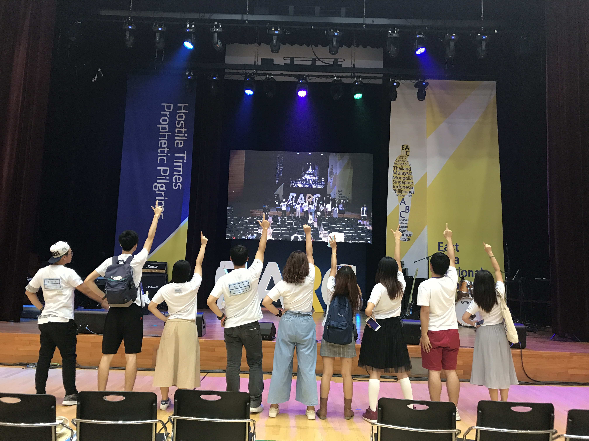

<!-- Slideshow container -->
<div class="slideshow-container">

  <!-- Full-width images with number and caption text -->
  <div class="mySlides fade">
    <div class="numbertext">1 / 4</div>
    
    <div class="text">Chapter 2 in 2014</div>
  </div>

  <div class="mySlides fade">
    <div class="numbertext">2 / 4</div>
    
    <div class="text">EARC 2017 in Korea</div>
  </div>

  <div class="mySlides fade">
    <div class="numbertext">3 / 4</div>
    
    <div class="text">EARC 2017 in Korea</div>
  </div>
  
  <div class="mySlides fade">
    <div class="numbertext">4 / 4</div>
    
    <div class="text">Graduation Song MV 2017 in UMAC</div>
  </div>

  <!-- Next and previous buttons -->
  <a class="prev" onclick="plusSlides(-1)">&#10094;</a>
  <a class="next" onclick="plusSlides(1)">&#10095;</a>
</div>
<br>

<!-- The dots/circles -->
<div style="text-align:center">
  <span class="dot" onclick="currentSlide(1)"></span> 
  <span class="dot" onclick="currentSlide(2)"></span> 
  <span class="dot" onclick="currentSlide(3)"></span>
  <span class="dot" onclick="currentSlide(4)"></span> 
</div>
<audio controls autoplay>
  <source src="Reflection with Melody.mp3" type="audio/ogg">
  <source src="Reflection with Melody.mp3" type="audio/mpeg">
 
</audio>
